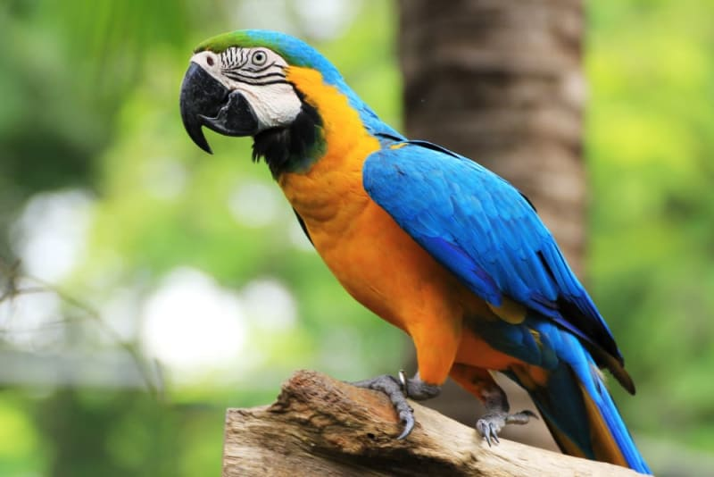

John
2 Year old Macaw
John is a vibrant and curious 2-year-old macaw with a dazzling array of colorful feathers. Always full of energy, he loves to explore his surroundings and play with his favorite toys. With a mischievous twinkle in his eye, John enjoys mimicking sounds and engaging with anyone who comes near. His playful spirit and affectionate nature make him a cherished companion, bringing joy and a burst of tropical energy wherever he goes.